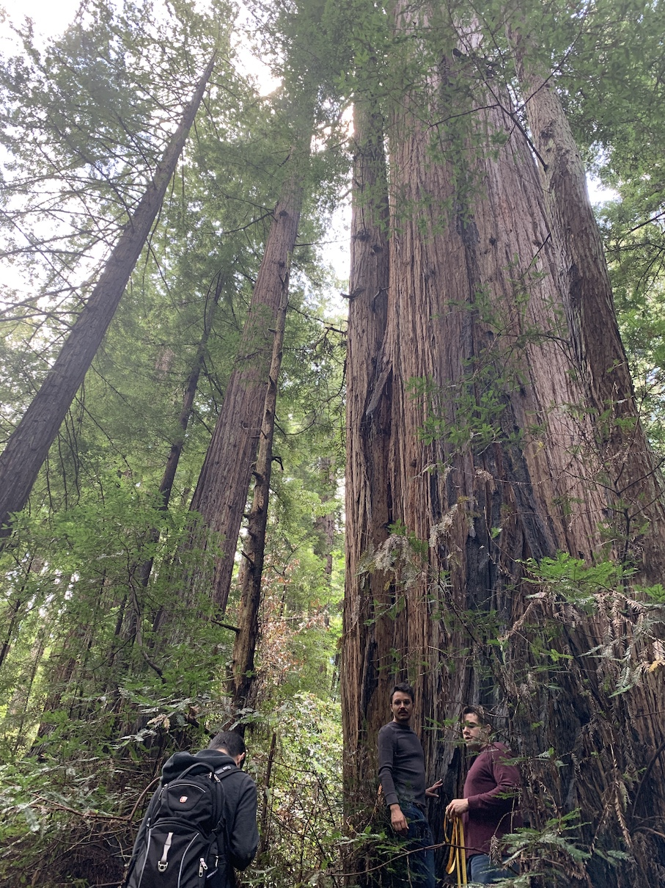
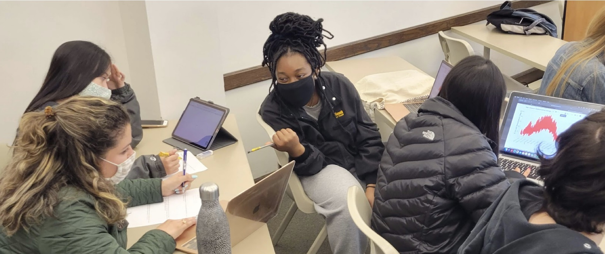
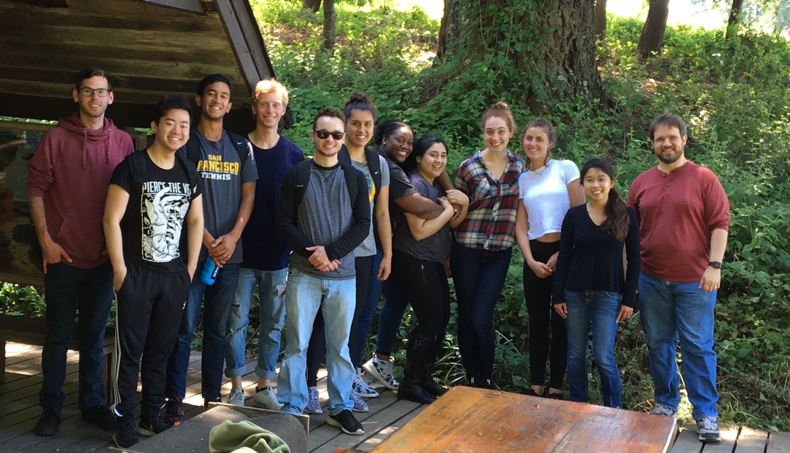

Teaching
Teaching Philosophy
Modern pedagogical research suggests that the primary role of teachers is not to teach, which implies the conveyance of a polished set of knowledge, but rather to facilitate learning. Deep learning and true understanding of concepts come from individuals confronting inconsistencies in the way they currently think a set of ideas fit together. Thus, the role of a teacher is to help students identify these areas where understanding is incomplete and then help them develop the skills of critical thinking and a facility with the tools that will allow the students to create new mental structures for themselves. Ultimately, the best teachers can instill in students the cognitive and technical skills, and more importantly the motivation and self-confidence, to enable them to become life-long, self-directed learners.
Project and Inquiry Based Learning
The thing that makes most scientists excited about their work is the thrill of discovery, of learning something new for the first time. Unfortunately, many undergraduates in the STEM disciplines don’t get an opportunity to experience this while they are students. Those lucky enough to participate in research experiences on campus or through summer programs like the National Science Foundation’s Research Experiences for Undergraduates (REU) program get a taste, but these fortunate students are only a small subset of the total. We also know that there are substantial (financial, social, logistical) barriers to participation of minoritized students who would otherwise thrive in these settings (Chaudhary and Berhe 2020). By bringing authentic research experiences into the classroom — often referred to as CUREs, or Course-Based Undergraduate Research Experiences (Auchincloss et al. 2014) — more students can truly experience the practice of science.
Computational Training
I use a practice-based integration of experiential, quantitative, and computational literacy as a core tenet of my own approach to teaching. As a postdoc, I co-authored a study that found that many students in Ecology felt that their exposure to quantitative (mathematical, statistical, computational) approaches to scientific practice was inadequate (Barraquand et al. 2014) and wished they had taken more such courses as undergraduates. Quantitative and computational literacy is particularly useful because it is a tool that makes it easier to figure out what it is that we don’t yet understand or know.
My conviction that computational skills are empowering for students and scientists at all levels have also grown out of numerous extramural teaching and training experiences over the past 15 years. The most formative of these for me have been my experiences with Software and Data Carpentry. These organizations (collectively, The Carpentries) are global, non-profit, volunteer organizations whose mission it is to help teach scientists best practices for research computing. The practical applications of the skills we teach (scripting in python or R, scripting and navigating using a shell, version control using git and GitHub, and structured data and databases) are immediately recognized, and many researchers have said they wished they had learned these skills much sooner in their studies or careers (Jordan et al. 2018).
Beyond the Carpentries, I have also taught these computational skills in numerous workshops at national (Ecological Society of America) meetings, and as an invited instructor at several week-long Data Institutes at the National Ecological Observatory Network in Boulder, CO, where I helped teach ecologists at all career stages how to work with the large-scale remote sensing datasets produced by NEON. I have contributed to reproducible research curricula through in-person participation in workshops and hackathons at the National Center for Ecological Analysis and Synthesis (NCEAS), the National Evolutionary Synthesis Center (NESCent), UC Berkeley’s Berkeley Institute for Data Science (BIDS), and online through peer code review for the rOpenSci project.
Specifications Grading
Being expected to perform as a practicing scientist inside of a classroom context can be challenging for undergraduate and graduate students, especially if they havenʻt had prior experience doing so. In order to lower the stress and anxiety of students, I have read broadly about the various methods of ‘ungrading’ and have adopted one developed by Linda Nilson called ‘Specifications Grading’ in nearly all of my classes. The core idea is to set the expectations high, but allow students repeated attempts to meet the standard. This ends up resulting in better finished products and reduces the fear of failing when attempting challenging tasks for the first time.
Creating Belonging
Engaging diverse trainees — at the undergraduate, graduate, and postgraduate levels — in a course of education that is structured around building in each of them the skills and habits of mind necessary to enable self-directed learning enables them to go on to apply those in all areas of their own lives, and in turn to impact others. The benefit is not just to the student, but to those the student interacts with now and into the future.